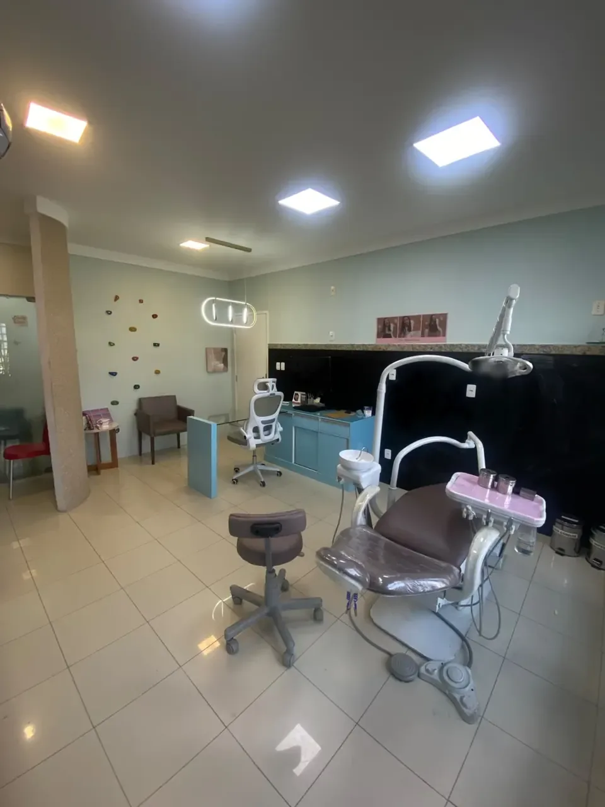
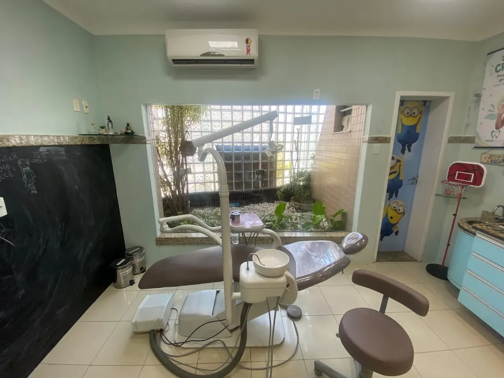
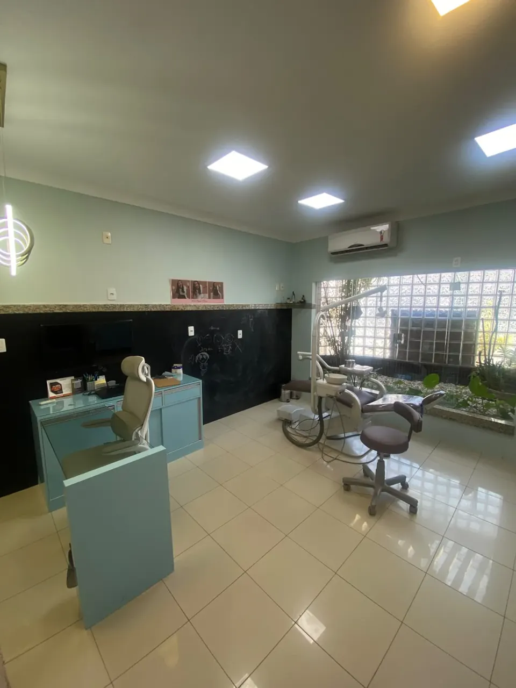
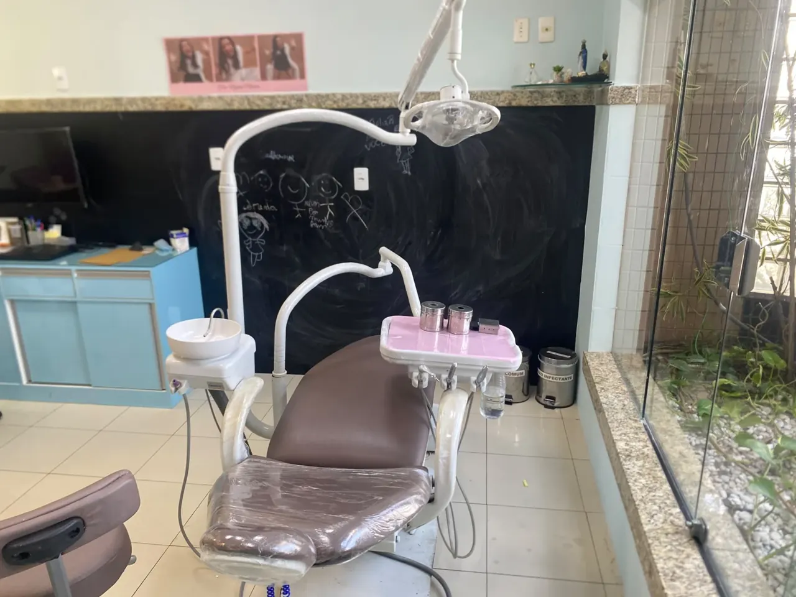
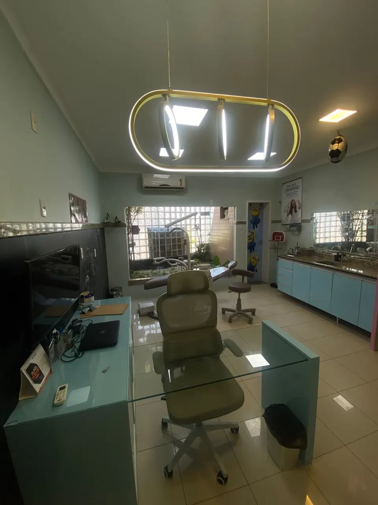

Prévia 1 · texto e estrutura em construção. Os marcadores [PENDENTE] mostram o que ainda falta confirmar com a Dra. Nayane. Os botões de WhatsApp ainda não têm o número do consultório.
A respiração e a posição da língua fazem parte do desenvolvimento dos dentes e do rosto. A Dra. Nayane Moreno avalia, explica o que viu e orienta se há indicação de tratamento.
A conversa abre no WhatsApp com a mensagem pronta.
Um protocolo que começa pela causa
O que a avaliação olha, além dos dentes
Respirar, posicionar a língua e mastigar têm relação com o desenvolvimento dos dentes e do rosto. Por isso, antes de pensar em aparelho, a Dra. Nayane procura entender por que os dentes estão se desenvolvendo daquela forma.
Quando a criança respira pela boca, a língua tende a ficar mais baixa. Com o tempo, isso pode influenciar o crescimento da arcada e o espaço para os dentes. [PENDENTE: validação clínica da Dra. Nayane]
A avaliação inclui uma conversa sobre a história de quem vai ser avaliado (anamnese). Na consulta, ela explica o que observou e como a respiração se relaciona com os dentes e o desenvolvimento.
Respiração
Teste respiratório
Língua
Teste de língua
Mastigação
Teste de mastigação
Sono
Análise do sono, com avaliação médica quando necessário
Postura
Análise da postura
Dentes e rosto
Radiografias e fotos de dentro e de fora da boca [PENDENTE: feitas sempre ou só quando necessárias?]
Questionários e vídeos para análise também podem fazer parte.
[PENDENTE: o protocolo em palavras simples, se tem nome, a ordem e a duração das etapas]
Quando o cuidado vai além da Odontologia
Respiração e sono envolvem outras áreas da saúde. Quando necessário, a Dra. Nayane trabalha em conjunto com fonoaudiologia, fisioterapia respiratória e otorrino. [PENDENTE: em que casos ela encaminha]
OdontologiaDentes, mordida e desenvolvimento da arcada
FonoaudiologiaFunções da boca, como a língua, a fala e o engolir
Fisioterapia respiratóriaO padrão de respiração
OtorrinoNariz, garganta e vias respiratórias
[PENDENTE: validação clínica da Dra. Nayane das descrições acima]
Sobre o sono: o diagnóstico de ronco e apneia é médico. Na avaliação, a Dra. Nayane observa a respiração e o sono do ponto de vista da Odontologia e, quando necessário, orienta a avaliação com o otorrino.
Escolha pela idade de quem vai ser atendido. Na dúvida, o consultório orienta pelo WhatsApp.
Odontologia Miofuncional
Crianças de 5 a 10 anos [PENDENTE: faixa de idade]
Para a criança que respira pela boca, dorme de boca aberta ou deixa a língua entre os dentes. Se ela ronca, a avaliação médica também faz parte, quando necessário. A avaliação olha a respiração, a língua, a mastigação e a musculatura da boca, funções ligadas ao desenvolvimento dos dentes e do rosto.
Quando há indicação, um dos recursos é o sistema Myobrace, no qual a Dra. Nayane é credenciada.
Na Odontologia Miofuncional desde 2019. [PENDENTE: comprovante]
Antes de indicar o aparelho, a Dra. Nayane avalia também a respiração, a língua e a mastigação [PENDENTE: confirmar que a avaliação de ortodontia inclui essas funções]. Em alguns casos, ela combina o aparelho com o cuidado dessas funções.
Pós-graduação em Ortodontia pela São Leopoldo Mandic (2014–2017). [PENDENTE: comprovante]
Limpeza e restaurações, particular ou por convênio [PENDENTE: confirmar que atende por convênio hoje e quais planos], para manter a saúde da boca em dia. [PENDENTE: o que cada plano cobre]
A conversa abre no WhatsApp com a mensagem pronta.
Convênios
Tem plano odontológico?
A Dra. Nayane atende particular e [PENDENTE: confirmar que atende por convênio hoje e quais planos]. A cobertura muda conforme o plano e o tratamento. Mande o nome do seu plano pelo WhatsApp e o consultório confere para o seu caso. [PENDENTE: confirmar que o consultório confere a cobertura pelo WhatsApp]
[PENDENTE: convênios ativos hoje, em etiquetas de texto]
O que faz parte da avaliação, do primeiro contato à explicação final.
[PENDENTE: ordem e duração das etapas e se tudo acontece no mesmo dia]
1
Conversa no WhatsApp
Você chama no WhatsApp, onde o consultório tira dúvidas e marca o horário. [PENDENTE: quem responde e em que horário]
2
Avaliação
A primeira consulta reúne avaliação clínica, ortodôntica e miofuncional: uma conversa sobre a história de quem vai ser avaliado (anamnese) e os testes. Veja o que a avaliação olha.
[PENDENTE: o que pode ser dito sobre a primeira consulta]
3
Explicação para a família
A Dra. Nayane mostra o que observou e explica, com calma, se há ou não indicação de tratamento.
4
Planejamento e trabalho em conjunto
Se houver indicação, o planejamento é feito para o caso e explicado passo a passo. Quando necessário, ela trabalha junto com fonoaudiologia, fisioterapia respiratória ou otorrino. [PENDENTE: em que casos encaminha]
Na Odontologia Miofuncional, a criança faz os exercícios em casa e o uso do aparelho é acompanhado por um aplicativo. Entre as consultas, as dúvidas podem ser tiradas pelo WhatsApp e pelo Instagram. [PENDENTE: validar o texto e como o tratamento termina]
[PENDENTE: como é a primeira consulta de clínica geral]
“Eu avalio e somente indico tratamento em casos que realmente o paciente necessite.”
Nayane Moreno é cirurgiã-dentista formada em 2011. Atende desde 2012 e construiu a carreira em Sergipe, onde hoje atende em Aracaju.
A partir de 2016, passou a atuar em clínicas só com Ortodontia. Em 2019, começou a se dedicar também à Odontologia Miofuncional.
Hoje une as duas áreas na ideia que resume o trabalho dela: Ortodontia além dos dentes. Olha a causa e, quando necessário, trabalha em conjunto com fonoaudiologia, fisioterapia respiratória e otorrino.
Fez 7 anos de tratamento ortodôntico, dos 9 aos 16 anos, e acompanhava de perto o trabalho da própria dentista. Na Odontologia Miofuncional, foi a primeira paciente, e conta que isso deu mais sentido e propósito à profissão. [PENDENTE: aprovação da Dra. Nayane para este parágrafo]
“Eu enxergo além dos dentes.”
Graduação em Odontologia Faculdade São Leopoldo Mandic, São Paulo, 2011 [PENDENTE: comprovante]
Pós-graduação em Ortodontia São Leopoldo Mandic, 2014 a 2017 [PENDENTE: comprovante]
Odontologia Miofuncional Capacitação e mini residência (2019) e curso avançado (2023), 50 h cada [PENDENTE: instituição e comprovantes]
Aparelhos miofuncionais Credenciada no sistema Myobrace, um dos recursos do tratamento
[PENDENTE: confirmar se o espaço infantil e estas fotos são do consultório atual] A criança é recebida de forma lúdica. O espaço tem escalada, basquete, trave de futebol, lousa interativa, dardos, amarelinha e boliche.





Endereço[PENDENTE: endereço completo, bairro e CEP]
HoráriosSegunda a sexta, das 8h às 12h e das 14h às 17h [PENDENTE: confirmar se é o horário dela ou da clínica]
Como chegar[PENDENTE: link do Google Maps; o mapa entra na prévia 2]
O que as famílias e os pacientes escrevem no Google
Avaliações públicas do perfil da Dra. Nayane no Google.
[PENDENTE: bloco só entra no ar com a autorização dela, a norma do CFO conferida e o perfil do Google conferido (link e nota). Se não for liberado até o lançamento, ele sai da página.]
Tire suas dúvidas
Perguntas frequentes
Na Odontologia Miofuncional, a Dra. Nayane atende em geral crianças de 5 a 10 anos [PENDENTE: faixa e idade mínima para avaliar]. A partir dos 11 anos, o caminho é a Ortodontia, para adolescentes e adultos. Seu filho tem menos de 5 anos? Chame pelo WhatsApp e o consultório orienta quando vale fazer a avaliação.
[PENDENTE: validação clínica da Dra. Nayane, sem promessa] Alguns sinais mudam com o crescimento, outros não. A avaliação serve justamente para saber em qual caso a criança está. Para avaliar, não é preciso esperar os dentes permanentes: a partir dos 5 anos [PENDENTE: idade mínima], a avaliação já olha como a criança respira, posiciona a língua e mastiga. Se há ou não indicação de tratamento, a Dra. Nayane explica depois da avaliação.
É uma abordagem da Odontologia que olha as funções da boca: como a pessoa respira, onde fica a língua, como mastiga e como funciona a musculatura da boca. Essas funções estão ligadas ao desenvolvimento dos dentes e do rosto. Quando há indicação de tratamento, um dos recursos é o sistema Myobrace, no qual a Dra. Nayane é credenciada. [PENDENTE: validação da Dra. Nayane]
O ronco merece atenção, e o diagnóstico é médico. Na avaliação, a Dra. Nayane observa a respiração e o sono do ponto de vista da Odontologia e, quando necessário, orienta a avaliação com o otorrino. Ela trabalha em conjunto com otorrino, fonoaudiologia e fisioterapia respiratória.
A Dra. Nayane tem uma forma lúdica de abordar a criança e explica para a família, com calma, o que observou. O acolhimento passa por prestar atenção no que a criança sinaliza e manter a escuta ativa. [PENDENTE: aprovação do texto e, se o espaço infantil ficar no consultório atual, acrescentar que ele tem escalada, basquete, lousa e outras brincadeiras]
Sim. A Ortodontia atende a partir dos 11 anos, adolescentes e adultos. Em alguns casos, a Dra. Nayane combina o aparelho com o cuidado da respiração, da língua e da mastigação. A indicação depende da avaliação.
A Dra. Nayane atende particular e [PENDENTE: confirmar que atende por convênio hoje e quais planos]. A cobertura muda conforme o plano e o tratamento. Mande o nome do seu plano pelo WhatsApp e o consultório confere para o seu caso. [PENDENTE: confirmar que o consultório confere a cobertura pelo WhatsApp]
Depende do que a avaliação mostrar, e nem toda avaliação termina em tratamento. Cada planejamento é feito para o caso, e a duração é conversada depois da avaliação. [PENDENTE: validação da Dra. Nayane]
O valor da avaliação e, se houver indicação, o do tratamento são passados pelo WhatsApp, junto com o que o seu plano cobre, se você tiver plano. Você recebe as informações antes de marcar e decide com calma. [PENDENTE: confirmar com a Dra. Nayane]
Conte pelo WhatsApp o que você percebeu. O consultório tira suas dúvidas e marca o horário. Para crianças a partir de 5 anos, adolescentes e adultos, em Aracaju.